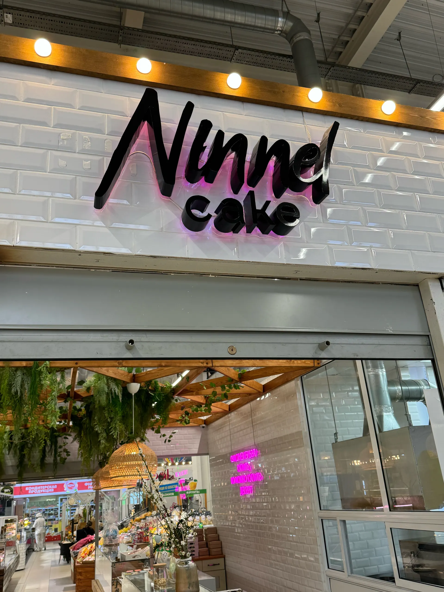
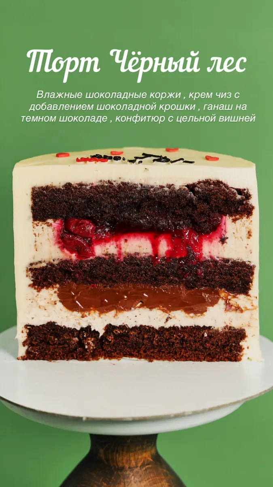
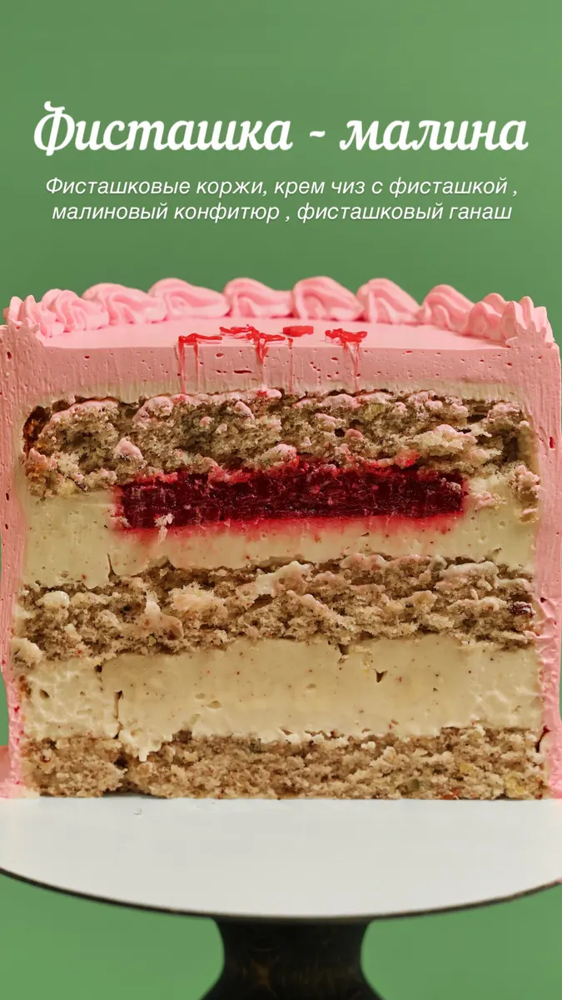
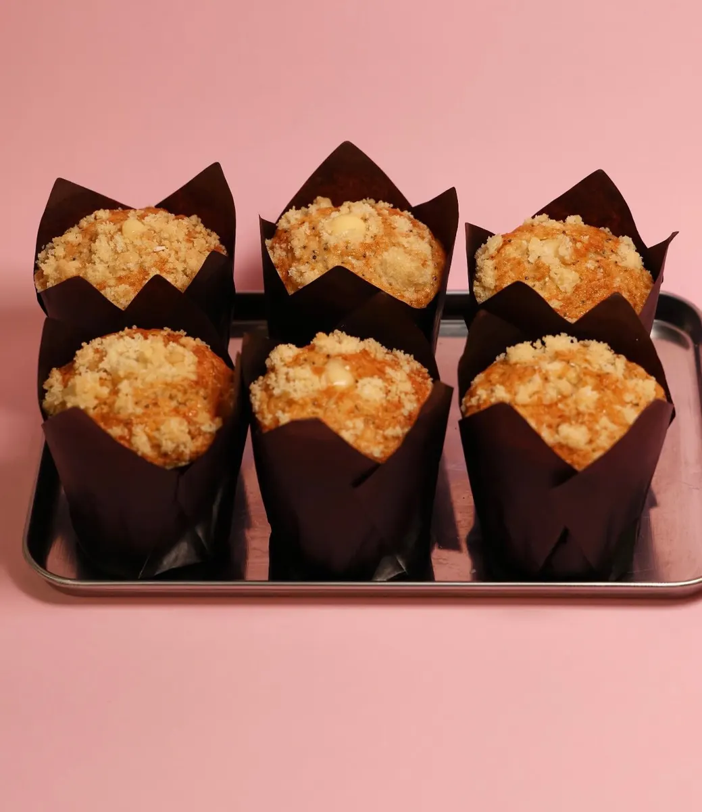

Кондитерская на Белана, 10А
Авторские торты и десерты на заказ в Липецке
Торты на день рождения, бенто и свадебные, меренговые рулеты, макаронс и десерты из натуральных продуктов. Самовывоз и доставка.

- 5,0 на Яндекс.Картах, 60 оценок
- Торты детские, свадебные, бенто, с фотографией
- Самовывоз и доставка
Что у нас можно купить
Цену торта называем при заказе: она зависит от начинки, размера и оформления.
Торты
- Торт на заказдетские, на день рождения, праздничные, свадебные, с фотографиейуточнить
- Бенто-тортуточнить
- Торты из витрины«Золушка», «Чёрный лес», «Фисташка-малина»уточнить
Десерты
- Меренговый рулетуточнить
- Тарталетки и тартыуточнить
- Макаронсуточнить
- Творожные колечкиуточнить
- Конфеты «Птичье молоко»80 ₽ за штуку
- Ириски с розовой гималайской сольюуточнить
Как заказать торт
- 01
Повод и дата
Напишите в Telegram или позвоните: скажите, к какому дню нужен торт.
- 02
Начинка и дизайн
Выберите начинку и расскажите, как оформить торт: по вашей картинке или фото.
- 03
Самовывоз или доставка
Заберите торт на улице Белана, 10А или закажите доставку.



Что пишут клиенты
Точно как на картинке
«Всё аккуратно, стильно, точно как на картинке (даже лучше!)», пишет Вилена Орлова.
Отдают вовремя
«Заказ даже раньше отдали», пишет Яна.
Натуральные продукты
«Всё приготовлено из натуральных продуктов», пишет Юлия.
Есть доставка
«Доставка вовремя», пишет Вилена Орлова.
Отзывы с Яндекс.Карт
«Очень вкусное местечко🌸 Заказывала на девичник тортик и трайфлы! Заказ даже раньше отдали. Получилось вкусно и красиво! Очень приятная девушка, уточняла все детали по заказу, постоянно была на связи. Спасибо за вкусный десерт и отличный сервис🫶🏼»
Яна · 7 августа
«Лучшая кондитерская.Всё приготовлено из натуральных продуктов,и с любовью к покупателям!Меренговый рулет лучший в городе,как и другие пирожные и десерты(птичье молоко и творожные колечки просто покорители сердец,как и всё остальное).Невозможно пройти мимо этой кондитерской и не купить что-нибудь сладенькое!!!Спасибо,что вы есть!»
Юлия · 10 февраля
«Заказывал бенто торт ко дню матери, исполнение и сервис на отличном уровне! Сделали скидку, это очень приятно. Upd и на вкус превосходно ❤️»
Carry Green · 30 ноября 2025
Отзывы с карточки на Яндекс.Картах, без правок.
Контакты
- Адрес
- улица Героя России Эдуарда Белана, 10А, Липецк
- Часы
- ежедневно, с 10:00 до 20:00
- Телефон
- +7 (922) 051-69-68